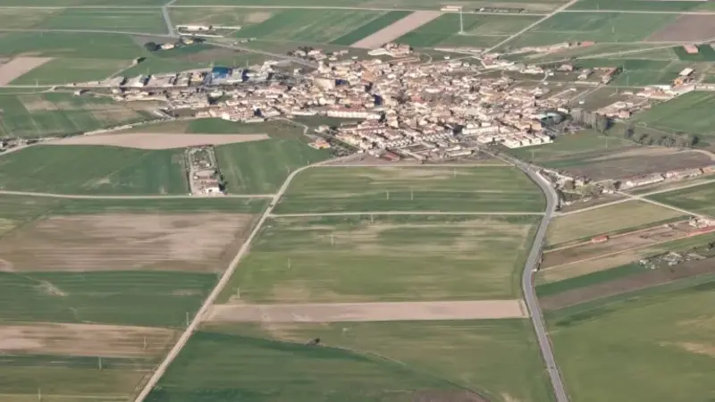

Guía de Viaje
Qué hacer en Segovia: vuelo en globo y planes únicos
Una guía práctica para comparar actividades en Segovia: monumentos, gastronomía, escapadas desde Madrid y experiencias memorables como el vuelo en globo.
Leer guía →